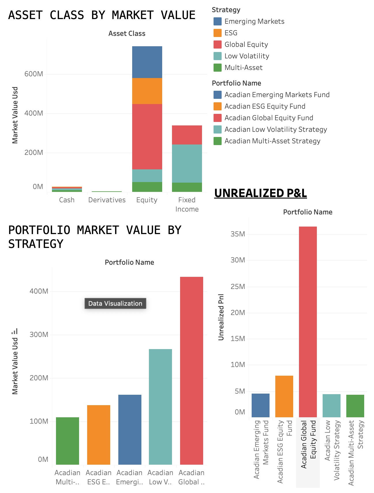
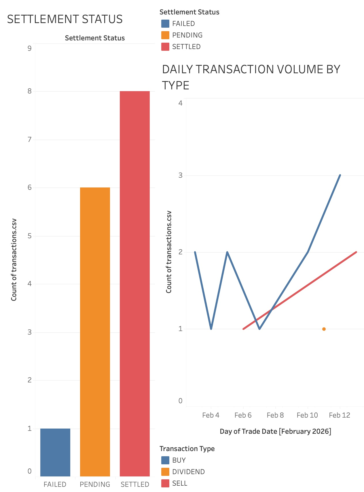
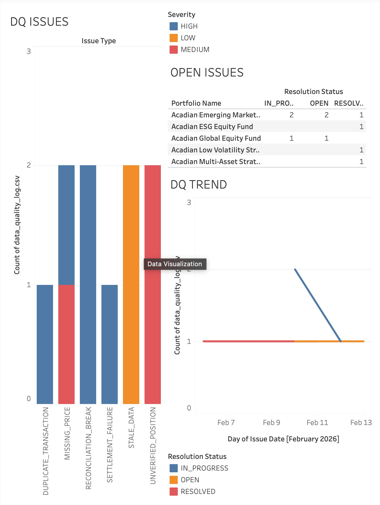

A full-stack analytical system designed to surface portfolio risk, flag settlement failures, and eliminate data quality blind spots — before they become operational incidents.
I'm a data analyst with hands-on experience turning messy, complex datasets into decisions people can act on. My background spans business analytics, visualization, and process improvement — and I've spent a lot of time working on problems where the stakes of getting data wrong are real.
What drew me to investment operations specifically is this: every bad trade, every settlement failure, every data quality gap has a number attached to it. That accountability is something I find genuinely motivating. I don't just want to build reports. I want to build systems that catch problems before they land on a portfolio manager's desk.
I built this platform from scratch because I wanted to understand the operational layer of asset management — not just in theory, but by actually modeling the data, writing the queries, and designing the dashboards an ops team would use every morning. I learn fast, I care about the details, and I'm ready to contribute from day one.
Portfolio health, P&L, and exposure data live in separate systems. Operations teams spend hours reconciling instead of monitoring.
Failed and pending settlements pile up without a real-time monitor. By the time someone notices, the cost and effort to fix it has multiplied.
Missing prices, duplicate records, and stale data corrupt downstream analytics. Without a systematic flag, these issues compound silently.



-- Asset class exposure % per portfolio SELECT p.portfolio_name, pos.asset_class, SUM(pos.market_value_usd) AS class_value, ROUND( SUM(pos.market_value_usd) * 100.0 / SUM(SUM(pos.market_value_usd)) OVER (PARTITION BY p.portfolio_id), 2 ) AS exposure_pct FROM portfolios p JOIN positions pos ON p.portfolio_id = pos.portfolio_id GROUP BY 1, 2 ORDER BY 1, exposure_pct DESC;
-- Flag pending settlements past T+2 SELECT t.transaction_id, p.portfolio_name, t.ticker, t.settlement_status, t.trade_date, t.settlement_date, CURRENT_DATE - t.settlement_date AS days_overdue FROM transactions t JOIN portfolios p ON t.portfolio_id = p.portfolio_id WHERE t.settlement_status IN ( 'PENDING', 'FAILED' ) AND CURRENT_DATE > t.settlement_date ORDER BY days_overdue DESC;
-- DQ score by portfolio and severity SELECT portfolio_name, COUNT(*) AS total_issues, SUM(CASE WHEN severity = 'HIGH' THEN 1 ELSE 0 END) AS high_sev, ROUND( SUM(CASE WHEN resolution_status = 'RESOLVED' THEN 1.0 ELSE 0 END) / COUNT(*) * 100, 1 ) AS resolution_rate_pct FROM data_quality_log GROUP BY 1 ORDER BY high_sev DESC;
-- Top performing positions by P&L SELECT p.portfolio_name, pos.ticker, pos.asset_class, pos.unrealized_pnl, RANK() OVER ( PARTITION BY pos.portfolio_id ORDER BY pos.unrealized_pnl DESC ) AS pnl_rank FROM positions pos JOIN portfolios p ON pos.portfolio_id = p.portfolio_id WHERE pos.unrealized_pnl > 0 ORDER BY p.portfolio_name, pnl_rank;
I've worked in data long enough to know that most companies collect data, but few actually operationalize it. Acadian is genuinely different. The systematic, quantitative approach to investing means that data quality isn't a nice-to-have — it's the engine. When the alpha signal depends on clean, timely, accurate data, every gap in the operations layer has a real cost.
That's the environment I want to work in. Where what I build actually matters to the outcome. Not just reporting on the past, but building infrastructure that protects performance going forward.
I'm early in my career, but I'm not new to moving fast and figuring things out. I built this entire platform — schema, queries, dashboards, and analysis — to show you how I think, not just what I know. Give me a seat at the table and I will earn it every day.
I'd love 15 minutes to walk you through this platform and talk about how I can be useful to the Investment Operations team.